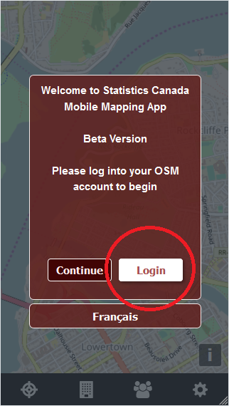
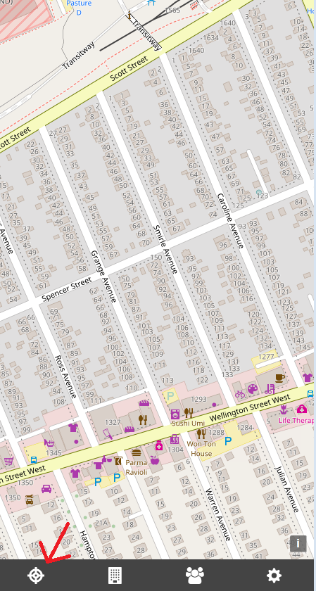
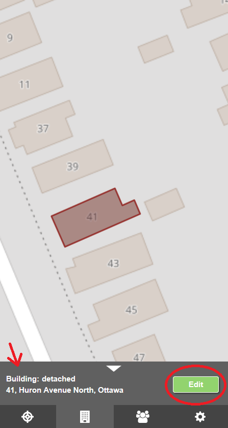
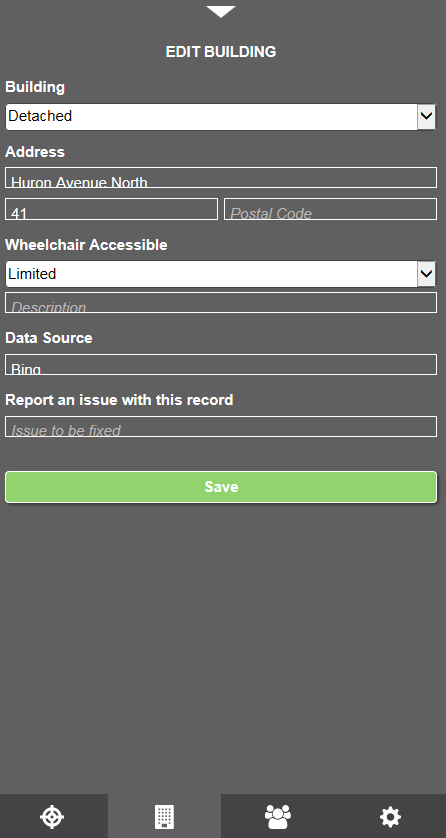

1) To use the app you must first log into OpenStreetMap (OSM). Click on the "Login" button, which will open a new window to the OSM web site. You can then log into OSM on this new web page either through your OSM account or through various social media accounts
2) Once you are logged in, click the left-most button on the menu. The app will use your mobile's GPS to match your location on the app's map.
3) Click on a single building footprint. A pop-up will appear from the menu at the bottom of the screen. This pop-up will provide you with some basic attribute information on the building. If you want to add or edit information regarding that building, click the edit button!
4) A menu will slide up with a form to complete. Some items will already be filled out, which means this is the data that already exists on OSM. Fill out any incomplete information. 
5) When you are ready, click the "Save" button to have your data uploaded onto OSM!